1換色階梯
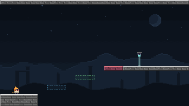
每次跳躍後，哪一塊平台會存在？
藍／綠／紅單色平台・青色雷射（向下）
看解法
- 從地面跳上藍色平台：起跳讓你變藍，藍平台出現。
- 再跳上綠色平台（變綠），再跳上紅色平台（變紅）。
- 走到白色出口。青色雷射是藍＋綠，紅色時無害。
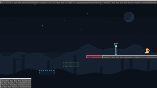
PHASE 是一款 Unity 像素平台遊戲。每次成功跳躍，世界就換一種顏色；只有符合目前顏色的石材、尖刺與雷射會存在或致命。
機制與編關說明已整合七色水晶、多平台與 Prefab；原有八關圖片拍攝於 e4332a2，水晶關卡圖片來自本次整合版。公開預覽是否同步需另外驗證。
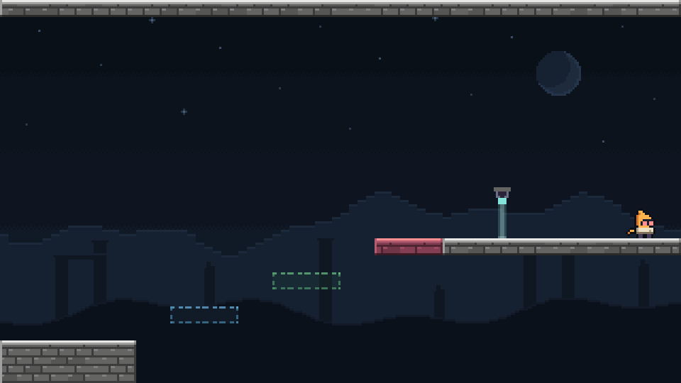
美術方向定名為「月夜的染色採石場」：低亮度夜空、固定的月亮與星點、遠山與採石場殘柱，前景是以 8×8 格拼接的錯縫石材。永久存在的石材是骨白與灰色；只在特定相位存在的石材染成紅、藍、綠或混色。
主角 Wick 是披著骨白斗篷的旅人，暗色臉孔、深色靴子。角色身上的顏色都有遊戲意義：
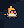
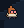
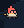
角色狀態示意：由遊戲正式的 PhasePixels renderer 繪製（24×28 原生像素，放大 4 倍），不是遊玩截圖。
故事、Wick 的身世與旅程目的尚未定稿。遊戲內以幾何、顏色和動作呈現規則，不放教學文字。
| 動作 | 按鍵 | 說明 |
|---|---|---|
| 左右移動 | ← → 或 A D | 空中仍可控制，但加速較慢。 |
| 上／下 | ↑ ↓ 或 W S | 攀爬、瞄準衝刺；地面按下蹲，下落中按住加速下墜。 |
| 跳躍 | Z 或 Space | 每次成功跳躍都切換相位。按住跳得較高。 |
| 衝刺 | X | 朝方向鍵所指的八方向衝刺；沒按方向就朝面向。 |
| 抓牆 | C 或 Shift | 按住貼牆攀爬。左右 Shift 都有效。 |
網頁版先點一下遊戲畫面取得鍵盤焦點；網頁本身沒有按鈕。選單與全螢幕都在遊戲畫面內，原生版與網頁版相同。
phase.keys.v1；網頁版存在瀏覽器的網站資料）。舊網頁設定視窗的鍵位不會轉移。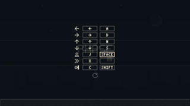
控制器以原生像素、Y 向下、每秒 60 步運算。Wick 的碰撞框是 8×11 像素，蹲下時 8×6。以下數值取自 PhaseController.cs。
紅藍綠紅
正式十一關每次進房都從紅開始（原始沙盒換房時保留相位）。只有成功起跳會換色，包括地面跳、牆跳、攀爬跳、圓水晶補跳與衝刺中的跳躍。衝刺、攀爬、落地、走路都不換色，這是保留顏色的主要手段。
| 狀態 | 消耗 |
|---|---|
| 往上爬 | 約每秒 45.5 |
| 掛著不動 | 每秒 10 |
| 往下爬 | 不消耗 |
| 空中攀爬跳 | 每次 27.5 |
耐力歸零會自動放手。耗盡後仍按住抓牆貼著牆，下滑速度上限是每秒 45 像素；放開、離牆或按下就恢復正常落速。
碰到目前相位有效的尖刺或雷射、掉出畫面下緣、或被平台與機構擠進牆裡／推過封閉的房間邊界，都會死亡；開放的出口邊界則照常換房。約 0.28 秒後在本房間的起點重生：顏色回到紅、衝刺與耐力補滿，移動平台與齒輪回到初始位置。經過時間、跳躍、衝刺與死亡次數則保留。
重生前的最後 0.12 秒，八顆淺色像素會向出生點聚攏；沒有全畫面閃白。重落地（向下速度至少 120 像素／秒）則揚起六顆白色塵粒。
十一關中，走出房間右緣就進入下一關，並以 0.18 秒的水平像素滑動轉場；每個新房間都是新的檢查點。各房間左緣封閉，第 8 關接水晶關卡，第 11 關右緣封閉。
每塊地形、尖刺與雷射都有一個 phaseMask（1–7），由紅＝1、藍＝2、綠＝4 相加而成。目前相位包含在 mask 裡時，石材是實體、尖刺與雷射是致命的。
| mask | 顏色 | 紅相位 | 藍相位 | 綠相位 |
|---|---|---|---|---|
| 1 | 紅 | 有 | — | — |
| 2 | 藍 | — | 有 | — |
| 4 | 綠 | — | — | 有 |
| 3 | 洋紅（紅＋藍） | 有 | 有 | — |
| 5 | 黃（紅＋綠） | 有 | — | 有 |
| 6 | 青（藍＋綠） | — | 有 | 有 |
| 7 | 白（全部） | 有 | 有 | 有 |
失效的石材只剩淡色底與虛線邊；雙色石材用兩個顏色嵌點標出有效相位。地形另有舊欄位 phase：phaseMask 為 0 時，phase = −1 等於白（7），0／1／2 等於紅／藍／綠。
例：房間 6 的青色平台在藍與綠時可站。從它起跳的那一刻你變紅，它也同時消失，所以下一個落點必須是含紅的石材。
換色時，如果一塊剛變成實體的石材正和 Wick、移動平台或齒輪零件重疊，它會先保持可穿過，畫成較亮的實線框；等重疊的東西離開後才變成實體。原本就是實體的雙色石材在換色時不受影響。延後中的石材也擋不住雷射。
例：紅色時站在藍色虛線平台的範圍內起跳，變藍後那塊平台不會把你卡住，等你離開它才出現。
顏色符合目前相位才能拾取；白色全相位可用，雙色水晶接受其中任一相位。錯色時呈半透明，拾取本身不換色。
| 形狀 | 效果 |
|---|---|
| 圓形 | 儲存一次空中補跳，最多一跳；重新按跳躍才使用，成功跳出時才換色。 |
| 方形 | 直接恢復一次衝刺，即使原本已滿也會消耗水晶；不改相位，也不取消正在進行的衝刺。 |
實際落地或重生後水晶恢復，落地也會清除未用的補跳。圓水晶存量用斗篷上的白色環表示；眼睛、兜帽與圍巾仍保留原來的相位與衝刺意義。雷射先判定致命，不能靠同時拾取水晶免死。
白灰色的鉚釘平台，所有相位都存在。它只在你衝刺的瞬間出發，與你人在哪裡無關。站在上面或攀在它側面會被載著走；被它推進牆裡、推過封閉的房間邊界或推進危險物會死亡。它也會擋住雷射。同一場景可放多個平台；每次有效衝刺會同時啟動所有平台，各自依自己的路線移動。
returns 關閉：站點循環returns 開啟：去了會回來例：房間 6 的渡船有三站（x＝96、152、208）。第一次衝刺停在中站；第二次到右站；第三次直接回到 96。
一面白色攀爬牆和一塊白色橫平台由齒輪與齒條連動（貼地橋四顆、架高橋三顆）。只有真正爬動造成的位移會驅動它：往上爬，牆跟著往上並帶著你，平台同步向右滑；往下爬則反向。掛著不動、放手、滑落、衝刺，或往上爬卻被擋住時，都不會轉動。
例：房間 7 的平台路徑上有一個紅色 8×8 方塊。紅色時攀爬，平台一出發就撞上；先跳一次變藍，方塊消失，平台才能滑滿 24 像素。
尖刺有上、下、左、右四個方向，長度以 8 像素為一格。它不是實體，站不上去；只有齒根那條 3 像素寬的帶狀區域會致命，而且只在 mask 包含目前相位時有效。失效時保留暗色齒形，雙色尖刺只在第一格標記顏色。碰撞檢查涵蓋整段移動路徑，包括衝刺、換色瞬間與被平台載運。
例：房間 5 地上有一排綠色朝上尖刺。保持藍色衝刺過去是安全的；如果在上面跳一下變綠，尖刺立刻生效。
8×8 發射器朝一個方向射出 4 像素寬的光束，沒有計時、不閃爍。光束停在第一個目前存在的實體（石材、移動平台、齒輪牆或平台）或房間邊緣。
例：房間 3 的白色雷射從下往上直射。貼地橋往右滑到它上方後，光束被橋面截斷；橋面以外的區域仍須避開。
前八關是 PhaseDemo1–PhaseDemo8，由 DemoRooms.json 產生。前三關各介紹一個核心：跳躍換色、衝刺驅動平台、攀爬驅動齒輪；後五關把它們和尖刺、雷射、混色平台組合起來。解法預設折疊，下方是測試裡重播的參考路線，不代表唯一解。

每次跳躍後，哪一塊平台會存在？
藍／綠／紅單色平台・青色雷射（向下）

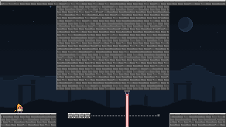
渡船該在什麼時候開？
兩站循環移動平台・低垂石頂・紅色雷射（向下）
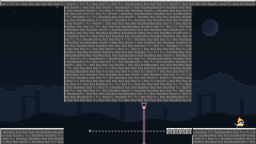
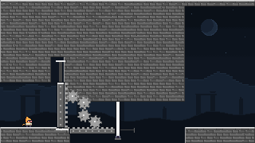
封住的通道要怎麼打開？
攀爬連動齒輪・白色雷射（向上，所有相位致命）
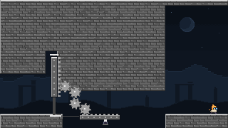
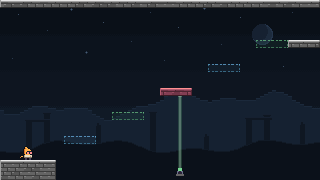
能不能事先讀出整段色序？
五塊單色平台・綠色雷射（向上）
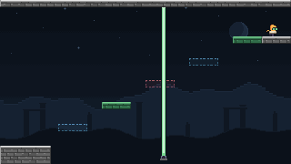
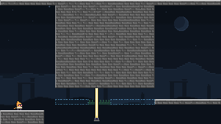
什麼時候「再跳一次」反而是錯的？
藍色平台・綠色尖刺・黃色雷射（紅＋綠，向上）
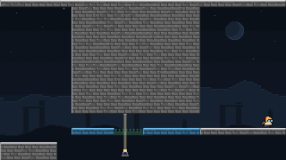
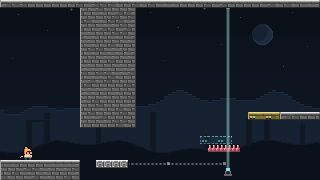
再衝刺一次有用，還是會開過頭？
三站循環渡船・青色與黃色平台・紅色尖刺・青色雷射（向上）
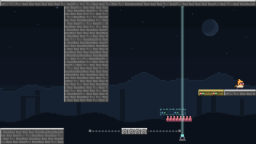
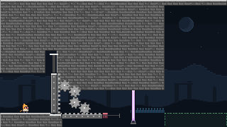
連動機構為什麼卡住了？
攀爬連動齒輪・紅色阻擋塊・藍色尖刺・洋紅色雷射（紅＋藍，向上）・綠色出口
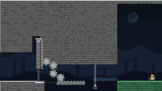
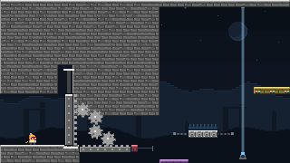
哪些動作應該保留顏色？
齒輪・三站渡船・藍色尖刺・藍色雷射・洋紅色低台・黃色出口
藍色時，洋紅色低台可以接住失手的你。
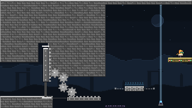
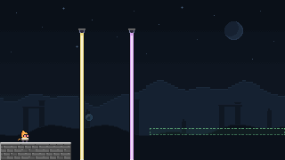
藍色圓水晶・綠色落點
先跳成藍色，吃到圓水晶；離開上一道光束後補跳成綠色，落在右側綠台。
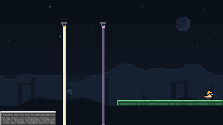
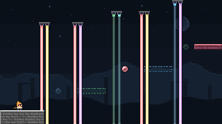
三顆配色圓水晶・十道常亮雷射
沿藍→綠→紅的色序向上走。三顆圓水晶各補一次跳躍，讓你在空中離開上一道閘後再換色，最後以紅色落在右上石台。
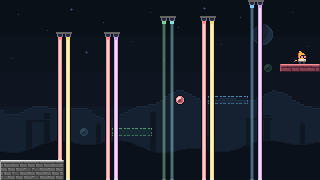
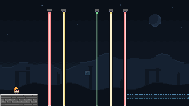
藍色方水晶・同色雙衝刺
先跳成藍色，向右衝刺吃到藍色方水晶；保持藍色再衝刺一次，跨過缺口後落地。
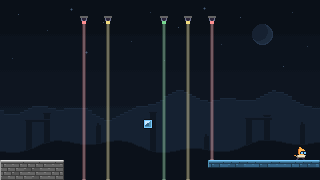
以下場景都不屬於正式十一關，也不在網頁版的建置清單（BuildWeb.py 建置 PhaseDemo1–8 與 PhaseCrystal1–3）。請在 Unity Editor 開啟後按 Play。
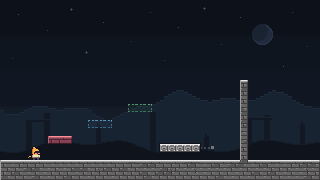
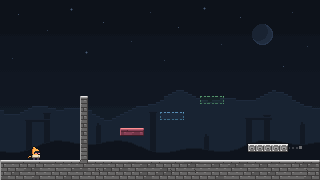
最早的兩個測試房間，以左右邊緣互通，沒有入場檢查點：換房時保留顏色、速度與跳躍／衝刺狀態。移動平台是 returns 模式。
想試玩就直接開既有場景。選單 PHASE/Create minimal sandbox 會覆寫這兩個場景，並把 Build Settings 重設成只剩這兩個，十一關與齒輪 Demo 都會從清單消失。
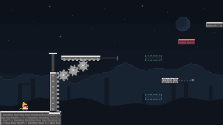
齒輪機構的獨立實驗，沒有房間連結。爬牆推出平台後，用跳躍換色、衝刺接上綠、紅平台，最後到右上角休息台。由選單 PHASE/Create gear demo 建立；再執行會覆寫這個場景，試玩請直接開啟既有檔案。
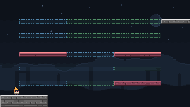
同學在 Inspector 中手工擺放的關卡，可作為編關範例。三欄平台從左下起點向上鋪開，右上角接永久白色平台。每塊彩色平台 80×8 像素（10 格長、1 格厚），同一列的三欄緊鄰，換色後會改變整列可站立的區域。
| 列 Y | 左欄 X＝32 | 中欄 X＝112 | 右欄 X＝192 |
|---|---|---|---|
| 32 | 藍 | 綠 | 綠 |
| 56 | 藍 | 綠 | 綠 |
| 88 | 紅 | 藍 | 紅 |
| 112 | 藍 | 藍 | 綠 |
| 136 | 藍 | 綠 | 紅 |
在 Unity 開啟 Assets/Scenes/PhaseDemo1.1.unity 即可試玩；要拿來修改，先用 File › Save As 另存自己的場景。以上是場景配置分析，完整通關路線尚未實測確認。
它獨立於正式十一關：不在 DemoRooms.json、Build Settings 或網頁建置清單，rightScene 指向 PhaseDemo2。目前地形已對齊 8 像素格線，右上白台在 (272, 32)、大小 112×8；重建八關不會覆寫這個檔案。
先試編一張圖可用遊戲內編輯器。需要移動平台或齒輪時，用 Unity 格線繪圖與 Inspector；正式八關則改 DemoRooms.json 再重建。
phase-custom-map.json 或開啟檔案選擇器，也就是網頁版的匯出 JSON／匯入 JSON；在 Unity Editor 中則使用剪貼簿。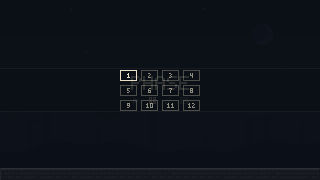
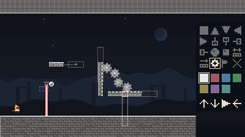
草稿只存在目前裝置（Unity PlayerPrefs phase.editor.v1；網頁版存在瀏覽器的網站資料），沒有雲端同步。換裝置或清除網站資料前先匯出。試玩不會改寫 Unity 場景或正式關卡。
目前可編靜態地形、四向尖刺、四向雷射、跳躍／衝刺水晶與出生點，範圍 40×22 格（320×176 像素）。移動平台、齒輪與房間串接需使用 Unity。
匯入的是單張地圖，有下列五個頂層欄位，另可加選用的 lasers 與 crystals；不是 {"rooms": […]}，也不能直接貼入 Demo 房間的 goal、route 或機構欄位。下例可直接匯入：
{
"name": "第一張地圖",
"blocks": [
{"x": 0, "y": 168, "w": 320, "h": 8, "phase": -1, "phaseMask": 7},
{"x": 80, "y": 144, "w": 32, "h": 8, "phase": -1, "phaseMask": 2}
],
"spikes": [{"x": 144, "y": 160, "length": 8, "direction": 0, "phaseMask": 4}],
"spawnX": 24,
"spawnY": 152
}座標與寬高／尖刺長度皆為 8 的倍數、在 320×176 內，物件不可占同一格。地形用 phase: -1 並以 phaseMask 指定七色；尖刺方向 0 上、1 下、2 左、3 右。雷射每格一個：{"x", "y", "direction", "phaseMask"}，方向同尖刺；水晶每格一個：{"x", "y", "kind", "phaseMask"}，kind 0 跳躍、1 衝刺。沒有雷射或水晶時，匯出檔省略這兩個欄位。至少一格地形，出生點 x＝0–312、y＝0–160 且對齊 8；名稱至多 64 字元，JSON 至多 200,000 字元。
PHASE › Paint Grid terrain 開啟「PHASE Grid」，勾選「畫地磚」，在「顏色」選七種相位色之一。PhaseTerrain.size 的像素寬高。原生 BoxCollider2D 提供模型矩形並同步相位和機構移動；Wick 的接觸仍由固定步進控制器計算，Unity 物理引擎不推動角色。
Grid 對齊最近的 8 像素格。每個房間是一個掛著 PhaseSandbox、PhaseGrid 與 Unity Grid 的根物件（cellSize＝8, 8, 1；無間隔、無旋轉、縮放為 1），其餘元件放在它的子物件上；啟動時從子物件收集。
PhaseSandbox（房間根物件）| 欄位 | 意義 |
|---|---|
pixelCamera | 場景中的正交 Camera。 |
pixelMaterial | Assets/Phase/PixelSurface.mat。 |
leftScene／rightScene | 走出左／右緣要載入的場景名稱；留空表示那一側封閉。目標場景必須在 Build Settings 中。 |
checkpointOnEntry | 勾選時，進房重設為紅色、補滿衝刺與耐力，從 spawn 開始（十一關都勾選）。不勾則從邊緣同高度接續，保留顏色與速度。 |
spawn | 出生點，原生座標（Y 不加負號）。 |
PhaseTerrain（石材）| 欄位 | 意義 |
|---|---|
| Transform | 左上角，(x, −y)。 |
size | 寬高像素，自動取 8 的倍數。 |
phaseMask | 1–7 照上表；0 表示改用 phase。 |
phase | 只在 phaseMask＝0 時有用：−1 白、0 紅、1 藍、2 綠。 |
PhaseSpike（尖刺）| 欄位 | 意義 |
|---|---|
| Transform | 尖刺 8 像素格的左上角，(x, −y)。 |
length | 格數（1 格＝8 像素），沿尖刺底邊延伸。 |
direction | Up／Down／Left／Right，齒尖所指的方向。 |
phaseMask | 1–7，不能是 0。 |
PhaseLaser（雷射）| 欄位 | 意義 |
|---|---|
| Transform | 8×8 發射器的左上角，(x, −y)。 |
direction | Up／Down／Left／Right，光束射出的方向。 |
phaseMask | 1–7；7（白）永遠致命。 |
從 PHASE/Add 新增，或把 Assets/Phase/Prefabs/ 的平台、齒輪、雷射、尖刺與圓／方水晶拖到 PHASE Grid 下。地磚繼續用 Grid painter。
移動或複製整個 Prefab 根物件，路線會一起移動。選 Platform／Mechanism 子物件調整參數；各實例可獨立覆寫。保持旋轉 0、縮放 1，使用 8 像素移動吸附。根物件 (80, −144) 配節點 (0, 0)→(0, −64)，就是向上移動 64 像素的橫平台。
圓／方水晶使用 PhaseCrystal：kind 選 Jump／Dash、phaseMask 選 1–7，Transform 為 8×8 拾取格左上角。
PhaseMovingPlatform（衝刺平台）| 欄位 | 意義 |
|---|---|
size | 寬高像素，至少 8，且必須是 8 的倍數。 |
nodes | 至少兩個站點的左上角，相對父物件的原生 X／Y 向下偏移。移動 Prefab 根物件會平移整條路線。 |
returns | 見移動平台。開啟時只能兩個不重合的水平或垂直站點。 |
start | 起始站點索引。JSON 與 builder 沒有這個欄位，一律從 0 開始。 |
PhaseClimbGear（攀爬連動）| 欄位 | 意義 |
|---|---|
| Transform | 攀爬牆的左上角起始位置，(x, −y)。 |
wallSize | 攀爬牆寬高。 |
wallTop | 相對父物件的牆頂原生 Y，必須小於牆的起始相對 Y。兩者差值就是行程。 |
platformStart | 橫平台起始左上角，相對父物件的原生座標。 |
platformSize | 橫平台寬高。 |
platformEndX | 牆爬到頂時平台相對父物件的 X。 |
建立時會檢查兩件事，不符就丟出例外：
platformEndX − platformStart.x 必須等於牆的行程。因此往上爬時平台一定往右移。platformEndX + 6 與 platformStart.x + platformSize.x − 6 之間，也就是平台在兩端位置都蓋住齒輪且各留 6 像素。既有八關可用 Prefab 根物件 Unity 座標 (72, −104)、牆子物件 (0, 0)、8×56、wallTop −24；platformStart (16, 56)、56×8、platformEndX 40。行程 24，轉成世界座標後齒輪仍在 x＝119。
PhaseDemo1.unity），用 File › Save As 另存新檔，例如 Assets/Scenes/MyRoom.unity。不要用 PhaseDemo1–8 的檔名，重建八關會覆寫它們。PHASE 上的 PhaseSandbox、PhaseGrid 與 Grid，以及它指向的 pixelCamera（場景中的 Camera）與 pixelMaterial（PixelSurface.mat）。PHASE 底下修改、複製或刪除子物件。Transform 位置填 (x, −y)；平台站點、齒輪平台與 wallTop 填原生 Y。spawn。獨立試玩時清空 leftScene 與 rightScene，兩側就會封閉；從 PhaseDemo1 另存的場景原本會連到 PhaseDemo2。檔案是 {"rooms": [ … ]}，必須剛好 8 個房間。所有座標都是原生像素、Y 向下，不加負號。方向用數字：0 上、1 下、2 左、3 右。
| 欄位 | 內容 |
|---|---|
name | 房間名稱。 |
spawnX, spawnY | 出生點。 |
blocks | 石材 {x, y, w, h, phase, phaseMask}。phase 請寫明（−1 為白）；phaseMask 省略時為 0。 |
spikes | {x, y, length, direction, phaseMask}。length 是像素，必須是 8 的倍數（Inspector 是格數）。 |
crystals | {x, y, kind, phaseMask}，kind 0＝圓形補跳、1＝方形補衝刺。 |
lasers | {x, y, direction, phaseMask}。 |
nodeX, nodeY, moverW, moverH, returns | 移動平台：站點 X、Y 兩個等長陣列（至少 2 個）、寬高、模式。不需要就省略 nodeX。 |
hasGear, gearWall, gearTop, gearPlatform, gearEndX | 齒輪：hasGear 為 true 才建立。牆與平台用 {x, y, w, h}，限制與 PhaseClimbGear 相同。 |
route, goal | 只給測試用：route 是逐段輸入（frames、x、y、jump、dash、grab），goal 是終點的 x、落腳 y、顏色、跳躍與衝刺次數與機構升高量。 |
房間 1 的資料（刪去 route、調整排版）就是一個真實的最小例子：
{
"name": "換色階梯",
"spawnX": 24,
"spawnY": 149,
"blocks": [
{"x": 0, "y": 160, "w": 64, "h": 24, "phase": -1},
{"x": 80, "y": 144, "w": 32, "h": 8, "phase": 1},
{"x": 128, "y": 128, "w": 32, "h": 8, "phase": 2},
{"x": 176, "y": 112, "w": 32, "h": 8, "phase": 0},
{"x": 208, "y": 112, "w": 112, "h": 8, "phase": -1},
{"x": 0, "y": 0, "w": 320, "h": 8, "phase": -1}
],
"goal": {"x": 296, "y": 112, "phase": 0, "jumps": 3, "dashes": 0, "lift": 0},
"hasGear": false,
"lasers": [{"x": 232, "y": 88, "direction": 1, "phaseMask": 6}]
}修改例：在房間 1 藍、綠平台之間的下方加一排紅色朝上尖刺。在該房間物件裡加入：
"spikes": [{"x": 112, "y": 152, "length": 16, "direction": 0, "phaseMask": 1}]這是 2 格寬（16 像素）的尖刺，對應 Inspector 的 length 2。改了幾何後，請一併檢查該房的 route 與 goal 是否仍成立。
重建會從零覆寫 Assets/Scenes/PhaseDemo1–8.unity。在這八個場景裡用 Inspector 做的手工修改都會消失。重建前先儲存開啟中的場景，並用 Git commit 或複製檔案備份。PhaseDemo1.1、沙盒與齒輪 Demo 不受影響。
透過常駐的 Unity GUI Editor 與 Pipeline 執行，不使用 -batchmode。在專案根目錄：
unity status --project-path "$PWD" --until-ready --json
unity command --project-path "$PWD" run_script -- --file Verification/BackgroundEditor.cs --entry BackgroundEditor.Run
unity command --project-path "$PWD" eval 'PhaseSandboxBuilder.CreateDemoRooms();'Builder 會依序建立八個場景、讓第 N 關的 rightScene 指向第 N＋1 關、全部勾選 checkpointOnEntry，並補入 Build Settings，保留其他場景；第 8 關會連到 PhaseCrystal1。水晶三關另用 PhaseSandboxBuilder.CreateCrystalRooms() 重建，會覆寫這三個生成場景。
重建後跑關卡測試：每個房間的 route 都要零死亡抵達 goal。
unity command --project-path "$PWD" run_tests -- --mode editor --filter DemoRoomTests --async_tests true
unity command --project-path "$PWD" test_status重複 test_status 直到狀態是 completed 並檢查摘要。若改了 C# 原始碼，先執行 recompile -- --focus false 並等 recompile_status 成功。實際遊玩、鍵盤輸入與截圖檢查見 Demo.md 與 Development.md。
Unity 場景更新不會自動更新網頁預覽。本機建置與瀏覽器檢查：
python3 Verification/BuildWeb.py
node Verification/DemoWebSmoke.cjs Builds/Web發布到公開網址需要另外上傳，或由擁有者先完成 runner 與 Pages 設定後交給 CI，見 Web.md。
目前的 builder 不是任意數量的關卡編輯器。它目前分成固定八關 PhaseDemo1–8 與三關 PhaseCrystal1–3；第 8 關接水晶三關，最後一關右緣封閉。新增房間需要另外修改並驗證：
PhaseSandboxBuilder.CreateDemoRooms() 的房間數量檢查與連結；BuildWeb.py 的場景清單與 DemoWebSmoke.cjs 的路線；DemoRoomTests 的房間數與測試案例。只想試做的話，可以像 PhaseDemo1.1 一樣另開場景、手工擺元件，不經過 builder。
原始碼連結指向 main；各張圖片的拍攝版本見 images/README.md。
PhaseController.cs：移動、相位、衝刺平台、齒輪、危險判定Laser.cs：光束長度與遮擋PhaseSandbox.cs：房間、轉場、鍵位PhasePixels.cs：色盤與角色外觀PhaseTerrain.cs、PhaseSpike.cs、PhaseLaser.cs、PhaseMovingPlatform.cs、PhaseClimbGear.cs：Inspector 元件PhaseDemoRooms.cs、DemoRooms.json：房間資料格式與內容PhaseSandboxBuilder.cs：十一關、沙盒與齒輪 Demo 的建立DemoRoomTests.cs：參考路線測試PhaseDemo1.1.unity、EditorBuildSettings.assetDESIGN.md：美術方向；ThirdPartyNotices.md：移動手感參考與授權PhaseGridPainter.cs、PhaseGrid.cs：Unity 格線繪圖與碰撞幾何PhaseEditor.cs、PhaseCustomMap.cs、maps.js：遊戲內地圖編輯、格式驗證與網頁檔案存取